The first code I got running successfully on real hardware
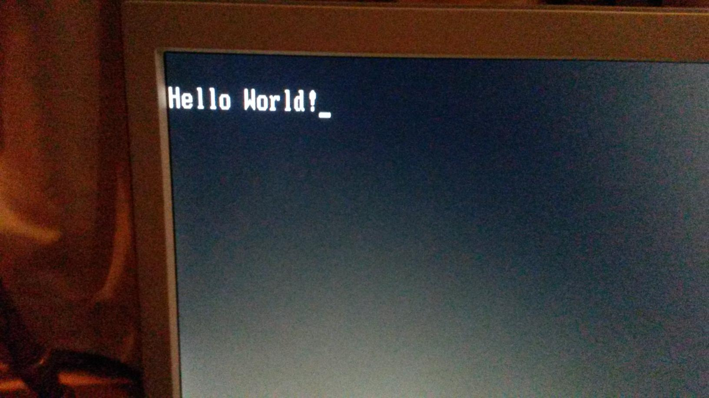
Printing out text instead of a single character
Printing out text instead of a single character

Successfully booting into 32-bit Protected Mode
First time successfully loading a kernel into RAM on real hardware
Code written in JASM (my first attempt at creating a language that would compile directly into Assembly)
The output of that JASM code
Testing while and if loops in JASM, a To-Do list
The beginnings of a JASM-based console for Os3
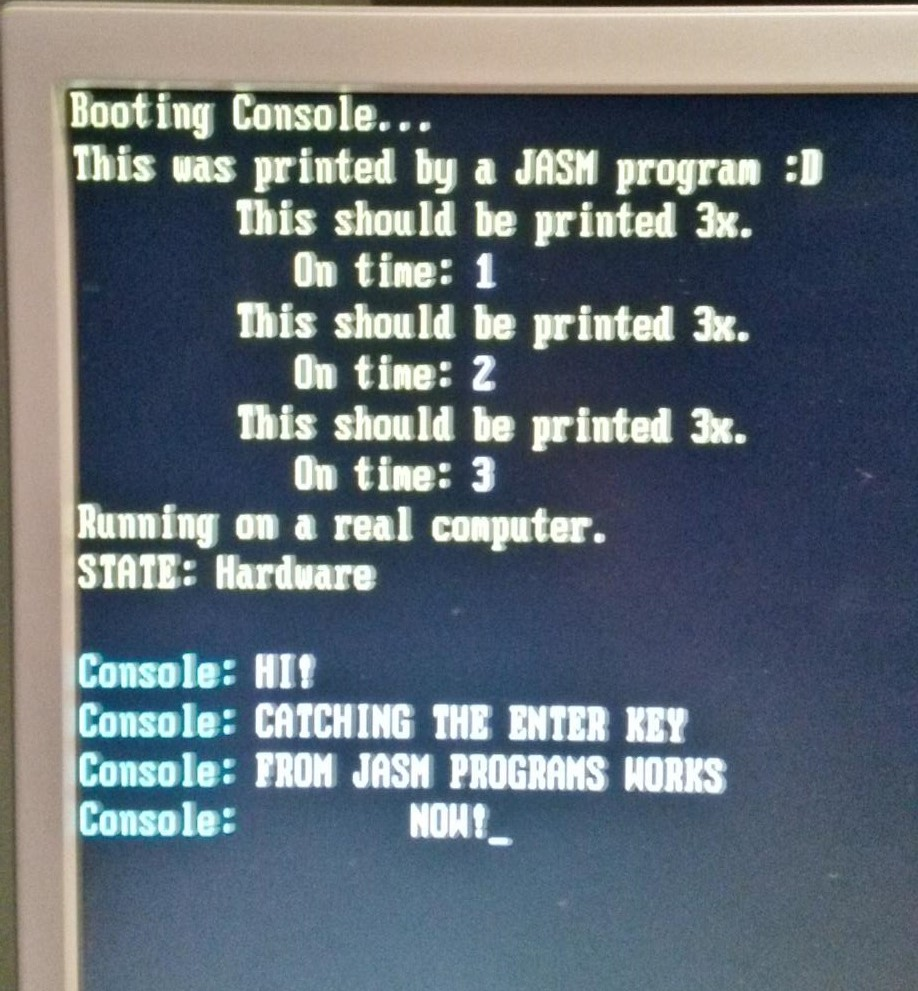
The output of that JASM code
The output of that JASM code
JASM gets the ability to checks Strings for equality
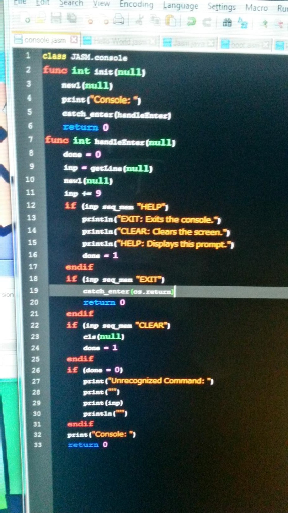
Adding commands to the JASM console
Adding commands to the JASM console
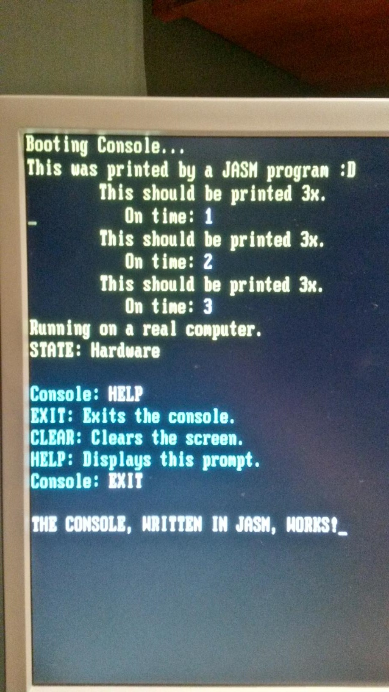
Commands being used in the JASM console
Commands being used in the JASM console
Os3 running in graphical mode (with a custom-made font!)
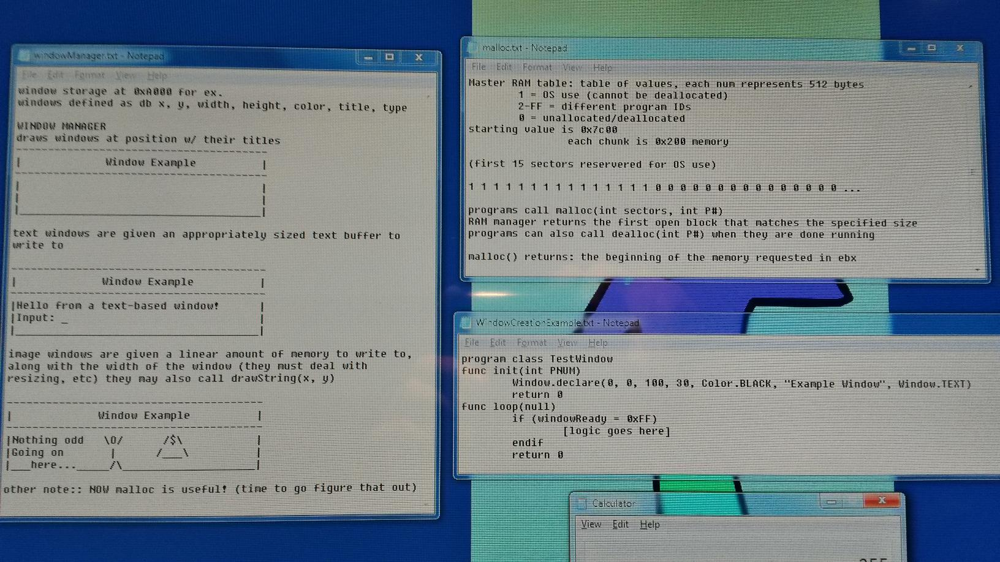
Some thoughts on windows and memory allocation
Some thoughts on windows and memory allocation
The JASM console running inside Os3's first windowing system
A resized window
Trying to display an image
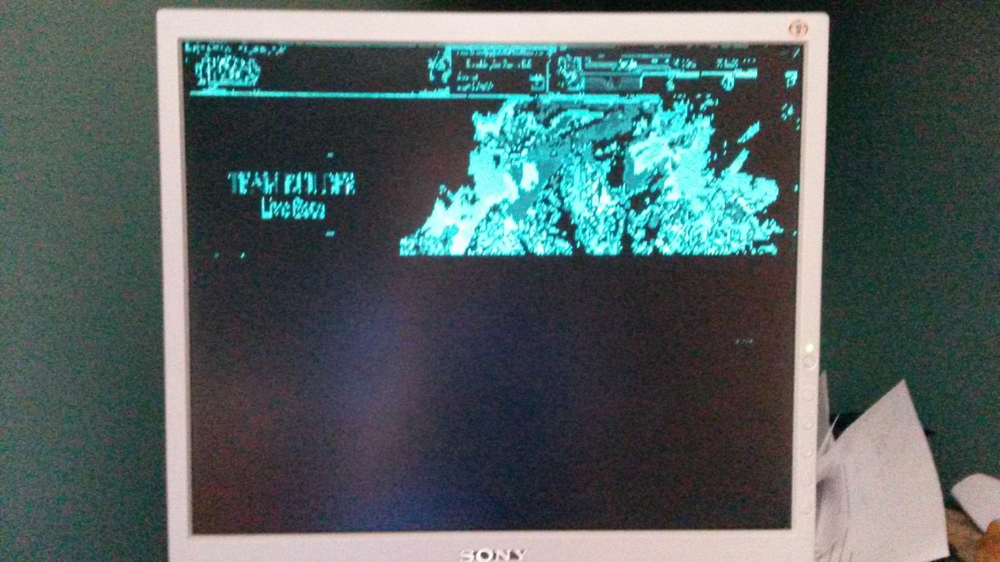
Better than the last time...
Better than the last time...
At least some very rough grayscale works
More VGA palette-setting weirdness
It works on the emulator...
A closeup of the output on real hardware (the "files" are just dumped after the kernel)
A closeup of the output on an emulator (because of restrictions in the bootloader it couldn't load the whole image)

Finally got palette-setting working on real hardware
Now in a full 255 colors!
A video of an early version of Os3 in action.
Displaying an image inside a window
The same with moved and resized windows
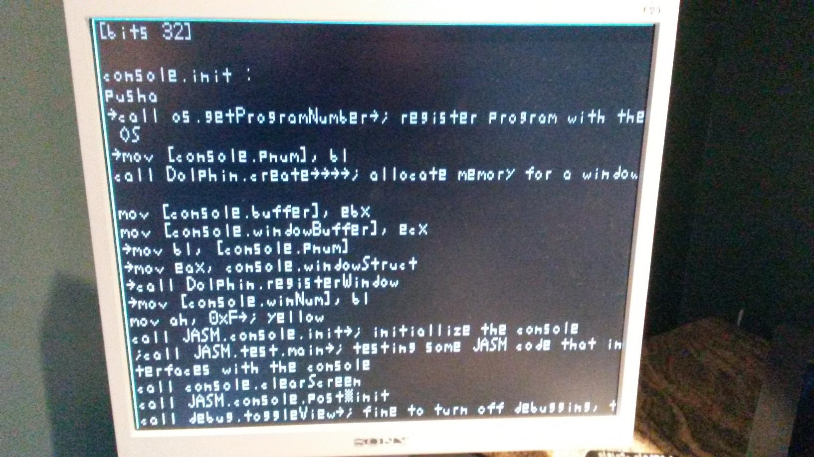
Viewing text from RAM in a window
Viewing text from RAM in a window
The beginnings of VESA implementation (allows the use of higher screen resolutions and bit depths than VGA)
The whole screen for scale
Playing around with some gradients in VESA
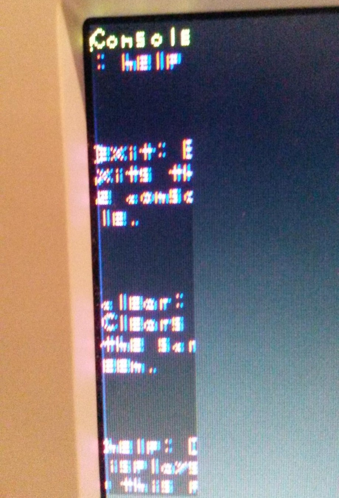
Text rendering (almost) working
Text rendering (almost) working
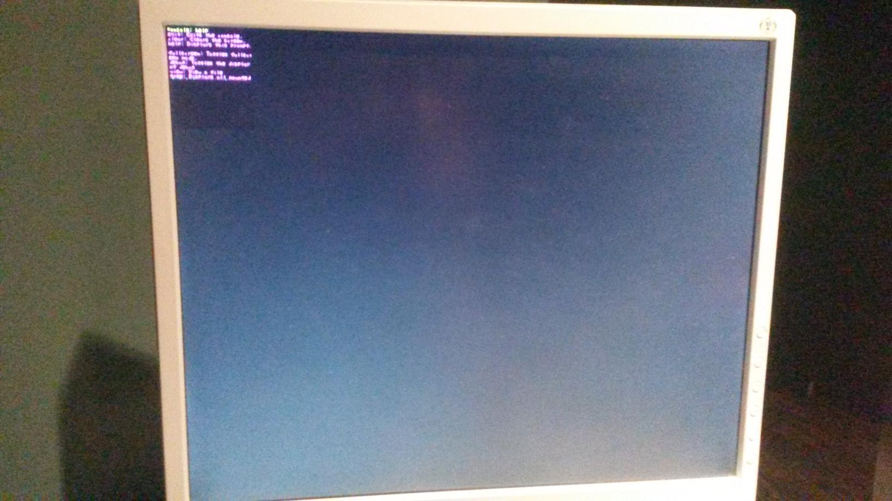
Screen for scale again (my font is really small)
Screen for scale again (my font is really small)
A lock screen!
A closeup of the lock screen
Some text opened in two windows in VESA mode
Some more text in a window
Closeup of some of the text
Viewing a (very small) image in full color!
The full screen for scale again
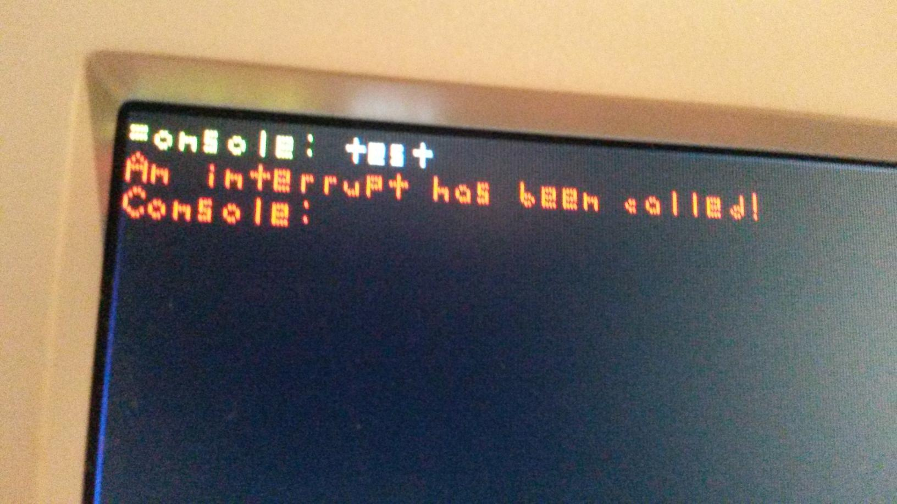
Interrupt handling is implemented
Interrupt handling is implemented
Os3 can tell the time!
Finding an EHCI Controller (for USB interfacing)
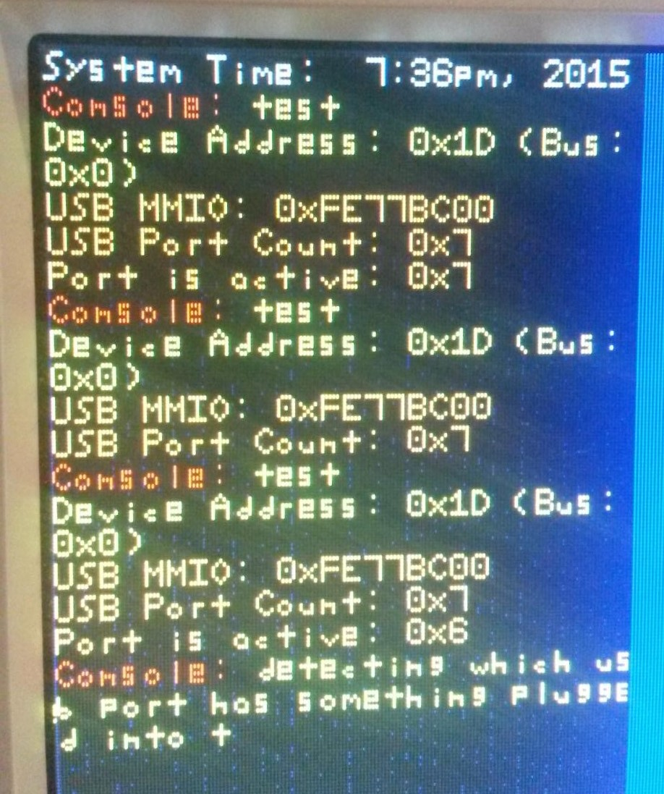
Some USB info (plugging in and unplugging a thumbdrive; Os3 still doesn't actually have USB support)
Some USB info (plugging in and unplugging a thumbdrive; Os3 still doesn't actually have USB support)
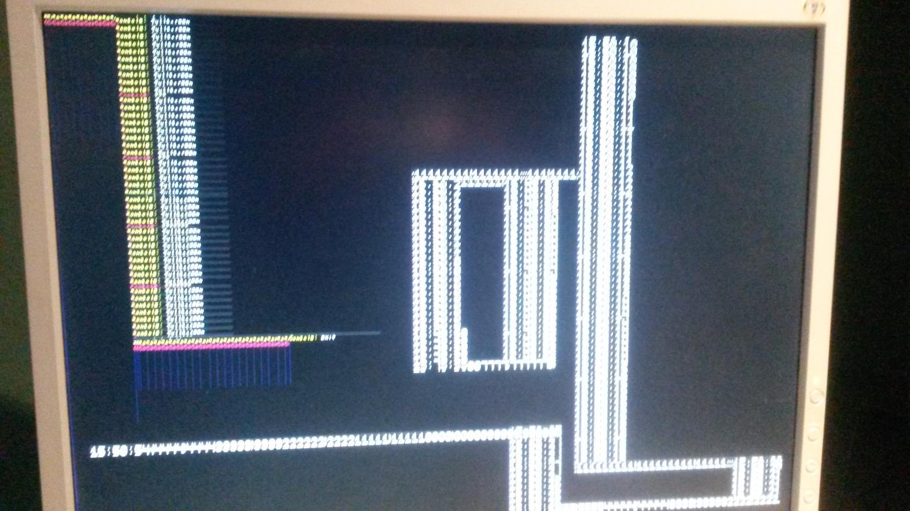
It runs a lot faster if you don't redraw the background though...
It runs a lot faster if you don't redraw the background though...
An implemented system clock being shown updating live in a text window
Graphics information on my laptop (trying to get Os3 to run on it was harder than I had expected)
It eventually worked
Although I had to go back to square one a few times...
Windows with titles, text is a bit messed up though